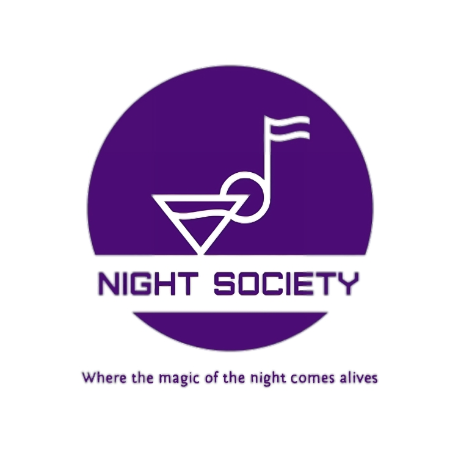

¿Qué es Night Society?
Night Society es una red social la cual te permitirá hacer amigos de forma rápida y segura, podrás hacer publicaciones e interactuar con ellas. Podrás publicar eventos y hacer búsqueda del tipo de evento al que te gustaría asistir (dancehall, guaracha, techno, etc..) y así mismo podrás calificar las diversas discotecas de Bogotá